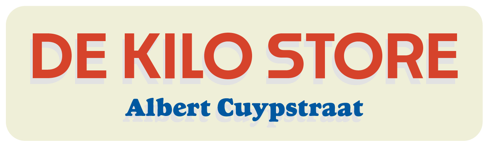
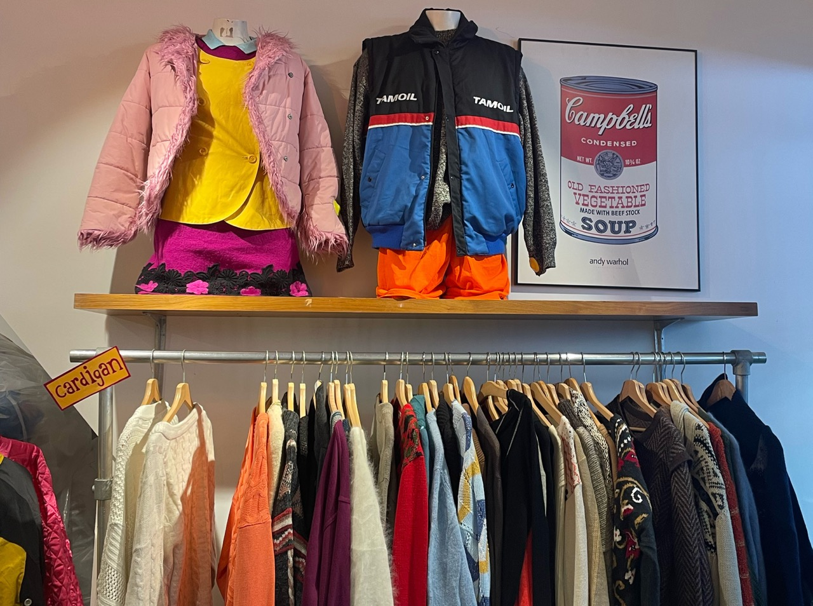
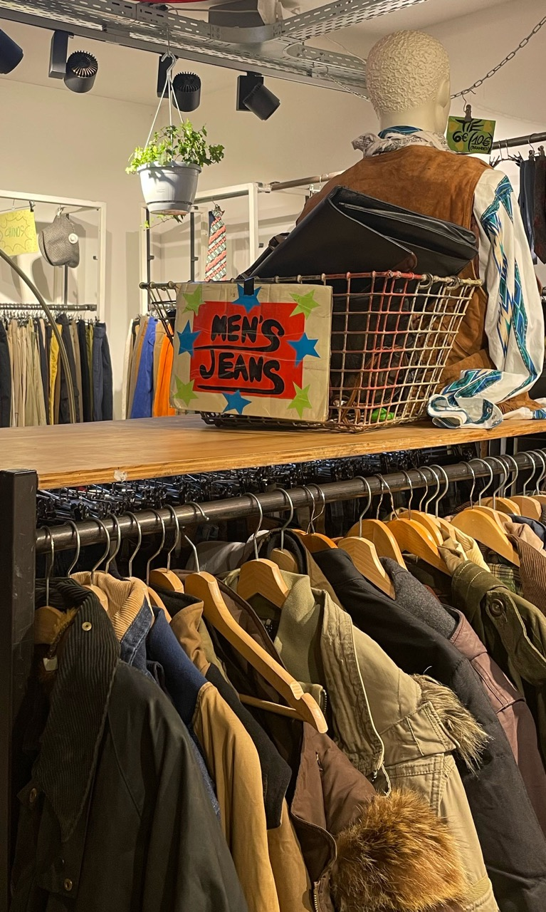
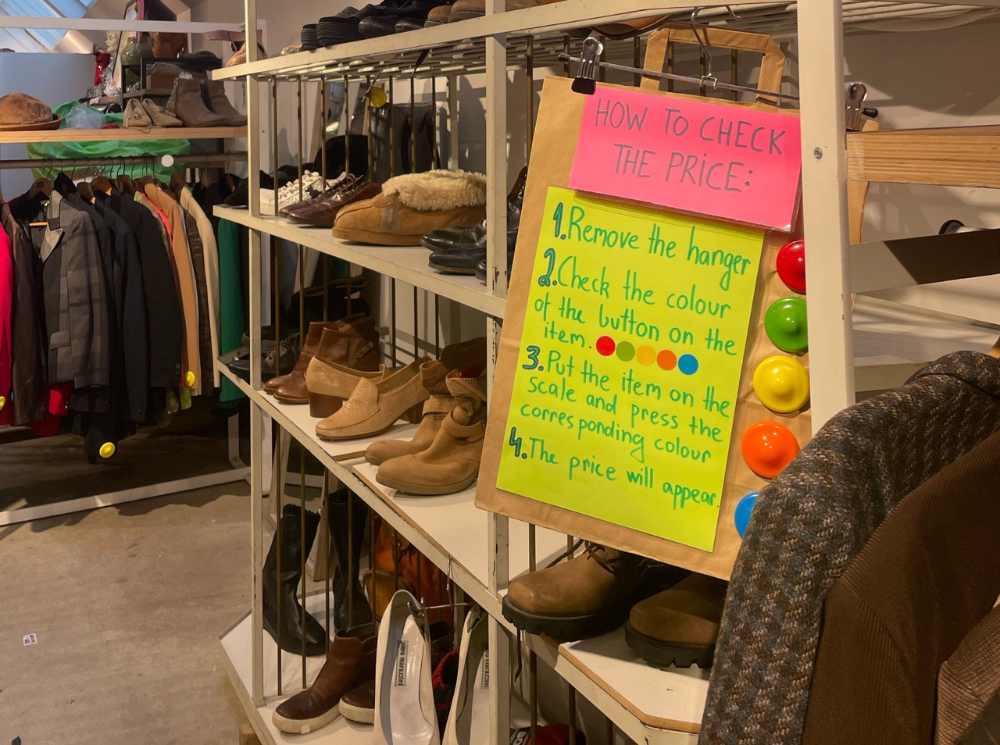

De Kilo store op de Albert Cuypstraat is één van de vintage winkels in Amsterdam, de winkel verkoopt kleding per kilo om iedereen een kans te geven op 2e hands kleding.

Vintage kleding is de beste duurzame trend van nu, de Kilo store speelt daar ook vooral mee op in doordat ze kleding van de jaren 60, 70, 80 tot 00’s verkopen.

Ben jij benieuwd of jij het duurzame kan herkennen?